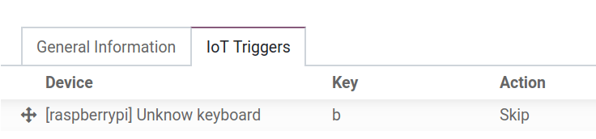

Connect a footswitch¶
When working in a manufacturing environment, it’s always better for an operator to have both hands available at all times. Odoo’s IoT box makes this possible when using a footswitch.
In fact, with a footswitch, the operator is able to go from one screen to another, and perform actions using their foot. This can be configured in just a few steps on the work center in the Manufacturing app.
Connection¶
To connect a footswitch to the IoT box, connect the two devices via cable. More often than not, this is done with a USB cable.
If the footswitch is a supported device, there is no need to take further action, since it’ll be automatically detected when connected.

Link a footswitch to a work center in the Odoo Manufacturing app¶
To link a footswitch to an action, it first needs to be configured on a work center. Navigate to . From here, go to the desired Work Center in which the footswitch will be used, and add the device in the IoT Triggers tab, under the Device column, by selecting Add a Line. Doing so means the footswitch can be linked to an option in the Action column drop-down, and optionally, a key can be added to trigger it. An example of an Action in the Manufacturing app could be the Validate or Mark as Done buttons on a manufacturing work order.
Important
It should be noted that the first listed trigger is chosen first. So, the order matters, and these triggers can be dragged into any order. In the picture above, using the footswitch automatically skips the part of the process that’s currently being worked on.
Note
On the Work Order screen, a status graphic indicates whether the database is correctly connected to the footswitch.
See also